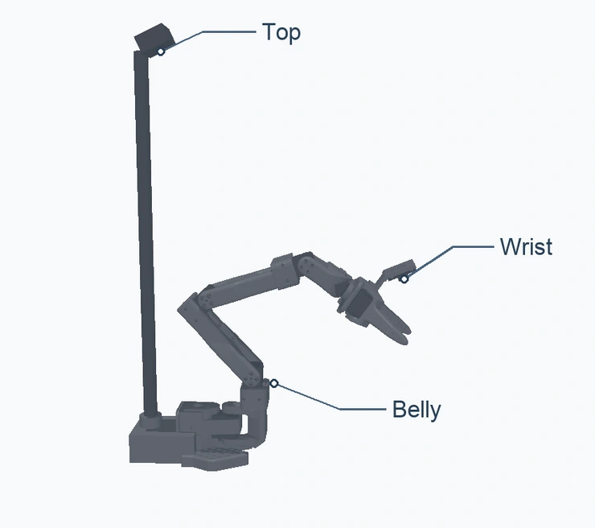

낙하 후 블록 재파지
기록 불러오는 중| 측정 항목 | 시뮬레이션 측정값 |
|---|
상승은 블록 중심의 초기 높이를 기준으로 측정했다. 양쪽 집게가 블록에 접촉하고 블록이 바닥에서 떨어진 구간의 최댓값이다.
연구 노트 / 로봇 조작 시뮬레이션
Vision-guided regrasping after an induced drop
로봇이 운반 중 블록을 놓치면 새 영상으로 위치를 다시 찾아 집을 수 있을까? SO-ARM101이 블록을 2 cm 들어 왼쪽으로 옮기는 도중 집게를 한 번 열고, 이후의 탐색과 재파지 과정을 기록했다. 에이전트는 동작마다 새 영상을 확인했고, 관절 목표각은 역기구학으로 계산했다.

왼쪽부터 손목, 베이스, 상부 시점. 녹화에서 동작 사이의 판단 대기 시간은 압축했다.
| 측정 항목 | 시뮬레이션 측정값 |
|---|
상승은 블록 중심의 초기 높이를 기준으로 측정했다. 양쪽 집게가 블록에 접촉하고 블록이 바닥에서 떨어진 구간의 최댓값이다.
선택한 행동 직전의 관측 · 손목 / 베이스 / 상부
기준 자세에서 한 관절씩 움직이며 측정했다. 수치는 모델의 관절 각도이며 단위는 도(°)이다.
| 관절 | 모델 한계 | 측정 범위 |
|---|